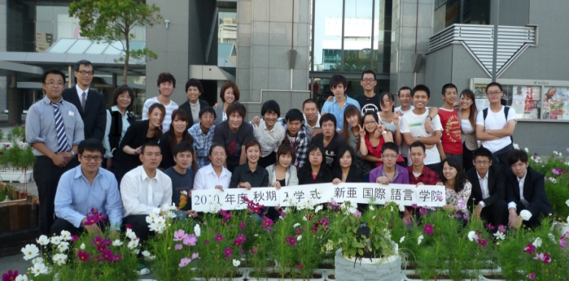
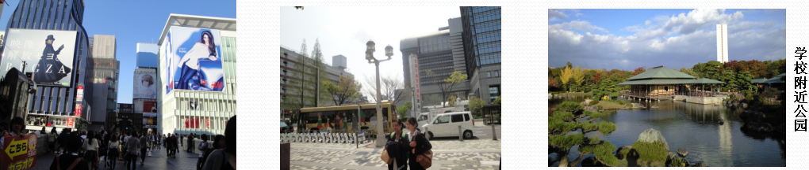
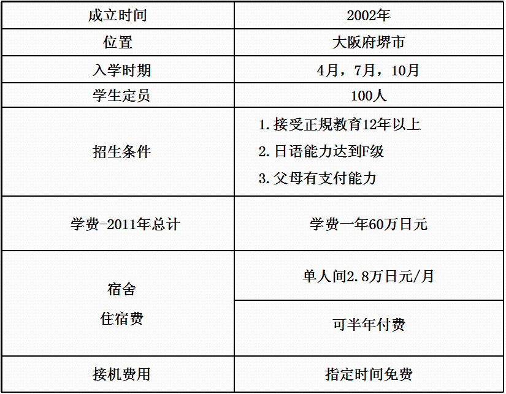
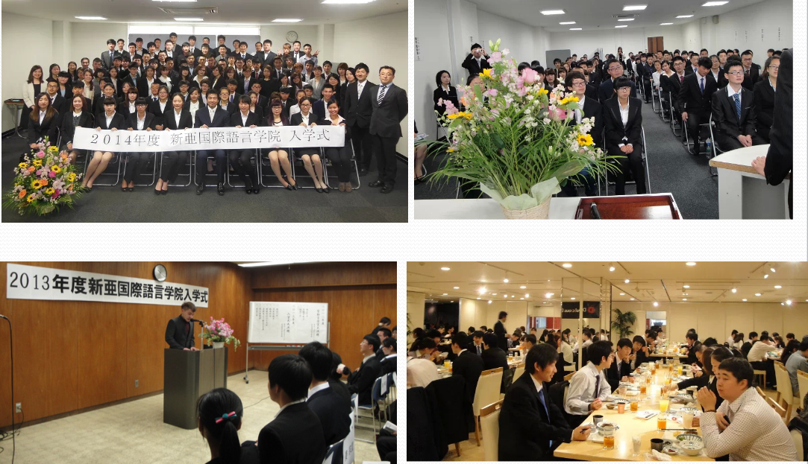
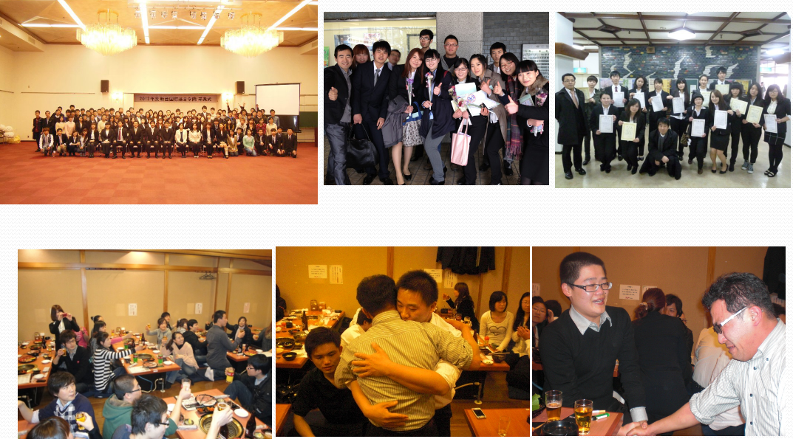
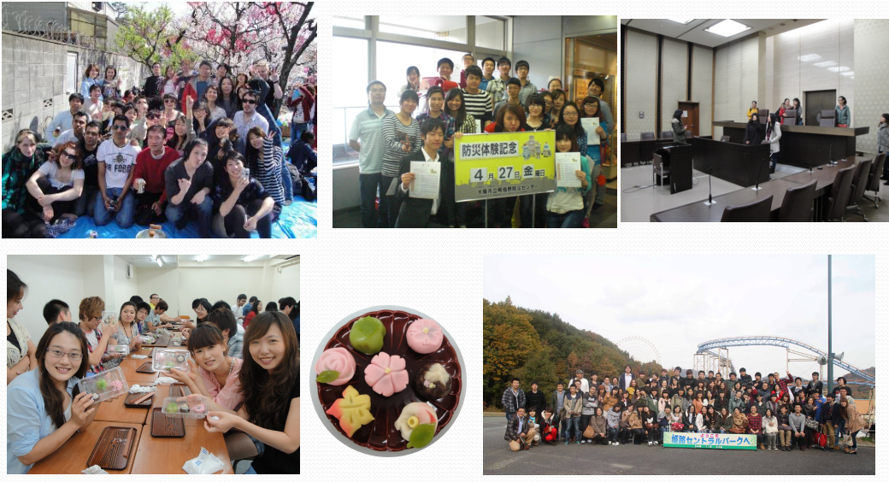
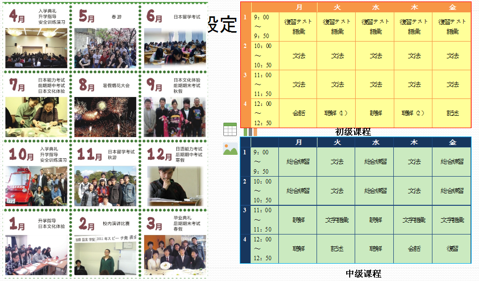

Introduction to New Asia International Language Institute: New Asia International Language Institute is recognized by the customs bureau as an excellent school, with a capacity of 100 students. It is a school that values a learning atmosphere and emphasizes teaching quality. Currently, 60% of enrolled students have college entrance exam scores between 400 and 500 or above, and 30% are graduates of undergraduate or junior college programs. Through the college's guidance for further education, ...
Introduction to New Asia International Language Institute New Asia International Language Institute is recognized by the Customs Bureau as an excellent school, with a capacity of 100 students. It is a school that values a learning atmosphere and emphasizes teaching quality. Currently, 60% of enrolled students score 400-500 or above in the college entrance examination, and 30% are graduates of undergraduate or junior college programs. Through the college's guidance for further education, sending students into Japan's top universities or graduate schools is the shared goal of our college and current students. We hope that every student can become an international talent through the guidance and support of our college, so that they can actively demonstrate their talents in the broad international community. Educational Philosophy and Policy: Our school's teaching style is "enjoyable, rigorous, and easy to understand." Being a school appreciated by all enrolled students and their parents is our school's eternal mission.

Location:
New Asia International Language Institute is located in the city center of Sakai City, a symbol of Osaka Prefecture. Famous branches of Osaka Prefecture University and Kwansei Gakuin University are also located here. The school is adjacent to the city hall, a large 100-yen supermarket, and the upscale Takashimaya shopping mall. With a prime location, convenient transportation, and a quiet yet bustling atmosphere, it is a traditional yet modern campus city.
It takes only 3 minutes on foot from the school to the station, 15 minutes by train to Osaka's busiest Namba, 30 minutes to Umeda, and 50 minutes to Kansai International Airport


Life guidance
1. The second major feature of New Asia International Language Institute is the good dormitories, affordable prices, and complete facilities. Single rooms cost 25,000 yen per month. Amenities include a refrigerator, color TV, washing machine, TV, microwave, kettle, rice cooker, pots and pans, boards, kitchen knives, curtains, shower curtains, trash bins, bedding, and more—all free of charge.
2. The school holds two freshman welcome events and one graduation farewell event every year. The school covers the costs, and all teachers and students gather at a hotel or Japanese-style restaurant for interaction. 3. Detailed life guidance. Guidance is provided on students' daily habits such as etiquette, greetings, and cleaning, helping students develop good habits.
4. When students feel unwell, the guidance teacher should accompany the student to the hospital at any time and handle all medical procedures on their behalf
5. Foreigner registration permits, national health insurance, visa renewals, daily necessities purchases, bank account openings, mobile phone purchases, and other daily life guidance teachers patiently handle each of these matters for students.
6. Part-time job support. The school has teachers specifically for students to find jobs. Based on students' Japanese proficiency, within one and a half to two and a half months after enrollment, a certificate of activities outside the qualification is provided. If needed, the work guidance teacher will introduce jobs to the student. All students receive free guidance on part-time jobs, interview training, resume writing, and post-employment precautions.
Entrance ceremony

Teaching characteristics
1. Superior location, high visa approval rate, high teaching quality, and a serious and responsible attitude toward students. In addition to regular textbooks, the teaching materials include unique New Asia textbooks developed and compiled by the experienced academic director, such as the "New Asia Study Abroad Exam Preparation Questions" and the "Entrance Exam Question Set," which frequently appeared in previous university entrance exams.
2. For students with a short period of Japanese study or weak foundation in their home country, after regular classes, the class teacher and academic director provide special tutoring every afternoon until the student's level catches up with others, ensuring every student successfully reaches Level 1 of the Japanese Language Proficiency Test.
3. One-on-one guidance for further studies and individual interviews. Free regular English, integrated subjects, and science tutoring courses are provided to prepare students for smooth university admission.
4. Invite universities and graduate schools to hold comprehensive admission briefings on our campus. This allows students to learn about the admission requirements of each university without leaving home.
5. Strict student management. Strict control of learning attitude and attendance rate. Regularly mail transcripts, school performance, and attendance rates to parents in China.

About college admissions guidance
Partially listed for university admission
Osaka University: Osaka Prefecture University
Osaka Kyoiku University, Nagoya Institute of Technology
Shiga Prefectural University, Tokushima University
Yamaguchi University, Kyoto Seika University
Kansai University Kwansei Gakuin University
Doshisha University, Ritsumeikan University
Ryukoku University and Nagoya University of Foreign Studies
Kyoto Sangyo University, Setsunan University
Osaka University of Tourism, Tezukayama University
Osaka Sangyo University, Himeji Dokkyo University
Kyushu University: Hokuriku Advanced Science and Technology University

Graduation ceremony

About part-time work


Dormitory introduction

Extracurricular activities

Annual course arrangements

新亚国际语言学院简介 新亚国际语学院是入关局认定的优良校，定员100人。 是一所重视学习气氛，讲究教学质量的学校。 目前在校生人数的6 0%的学生高考分数为400-500以上， 30%的学生为本科大学及大专毕业者。通过学院的升学指导, 把学生们送入日本一流大学或大学院是本学院和在校生的共 同目标。希望每一位在校生都能够通过本学院的指导和帮助 成为国际性人才，从而活跃在广阔的国际社会中发挥自己的才能。 教育理念和方针 本学院的上课方式为「愉快，严格，易懂」的授课。做一个被所 有在校学习的学生及其家长所感谢的学校是本学院永远办学宗旨。
地理位置：
新亚国际语言学院位于大阪府的象征城市-堺市的市中心。有名的大阪府立大学和关西学院大学分院也在这里。学院紧邻市政府和大型的百元超市及高级商场高岛屋。地理位置优越，交通便利安静不失繁华，传统又现代的学园城市。
从学校步行到车站仅需3分钟，坐电车到大阪最繁华的难波，仅需15分钟，到梅田30分钟，到关西国际机场50分钟
生活指导
1、新亚国际语言学院第二大特点宿舍好，价格便宜，设施齐全。单人间每月2万5千日元。内备有冰箱，彩电，洗衣机，电视，微波炉，热水壶，电饭煲，锅碗瓢勺，板子，菜刀，窗帘，浴帘，垃圾桶，被褥等，这些物品都是免费的。
2、学校每年设有2次新生欢迎会和1次毕业生欢送活动。由学校付费，全校师生在酒店或日式料理店进行交流。 3、细微的生活指导。对学生的礼仪，寒暄问候，卫生打扫等日常生活习惯进行指导，帮助学生养成良好的习惯。
4、学生身体不舒服时，生活指导老师随时陪同学生前去医院，并代替学生办理一切就诊手续
5、外国人登陆证，国民健康保险，签证续签，生活必需品的购买，银行户头开设，手机购买等生活指导老师都会耐心地一一为学生办理。
6、打工支援。学校有专门为学生找工作的老师。根据学生日语水平入学后1个半月-2个半月之间，为学生办理资格外活动证明书根据需要并由打工指导老师为学生介绍工作。所有的学生都免费接受打工指导，面试训练，履历书的写法，工作后的注意事项等辅导。
入学典礼
教学特点
1、地理位置优越，签证率高，教学质量高，对学生认真负责。授课使用教材除一般教材外，由教学经验丰富的教务主任研究编写的独特新亚教材，｢新亚留学考试应试对策试题｣，往年大学入学考试中经常出现的｢入試应试题集｣等教学材料。
2、对在国内日语学习时间短，基础底子弱得学生入学后在正常上课之外，每天下午由班主任及教务主任专门为其进行功课辅导，直至水平跟上其他同学为止。使每位学生都顺利达到日语能力考试1级。
3、1对1的升学指导及个人面谈。免费为学生设立定期英语，综合科目，理科等辅导课程，为顺利升入大学做准备。
4、邀请各大学，大学院来我校内进行召开综合升学说明会。让学生们不用出门就能了解到各大学的升学要求。
5、严格的学生管理。学习态度，出勤率严格把关。定期给国内的父母邮寄成绩单和在校表现，及出勤率。
关于升学指导
已升入大学 部分名单
大阪大学 大阪府立大学
大阪教育大学 名古屋工業大学
滋贺县立大学 德岛大学
山口大学 京都精华大学
关西大学 关西学院大学
同志社大学 立命馆大学
龍谷大学 名古屋外语大学
京都产业大学 摄南大学
大阪観光大学 帝塚山大学
大阪産業大学 姫路獨協大学
九州大学 北陆先端科学技术大学
毕业典礼
关于打工
宿舍介绍
课外活动
年间课程安排
English edition. Select 中文原文 to compare with the original Chinese article.
This article is edited and published by Liaoning Overseas Study Service Co., Ltd. The content is for study abroad planning reference only. Unauthorized reproduction is prohibited.
Information on policies, regulations, admissions brochures, and program fees is timely. Please refer to the latest releases from official institutions and institutions in various countries; For detailed verification, please Contact an advisor。